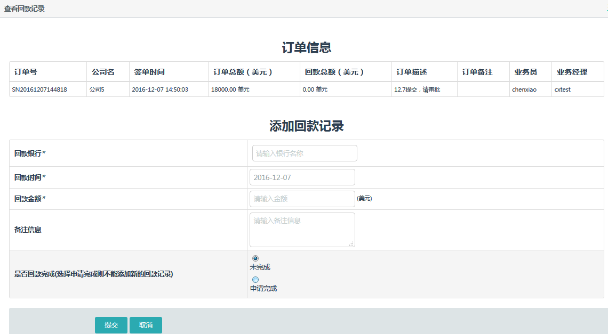
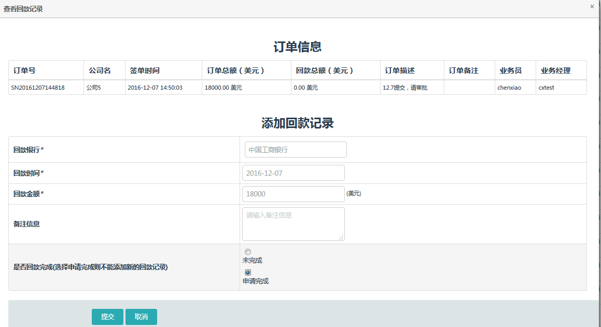
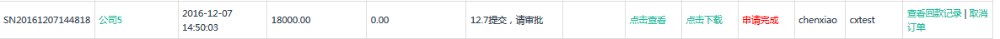
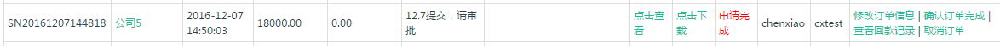
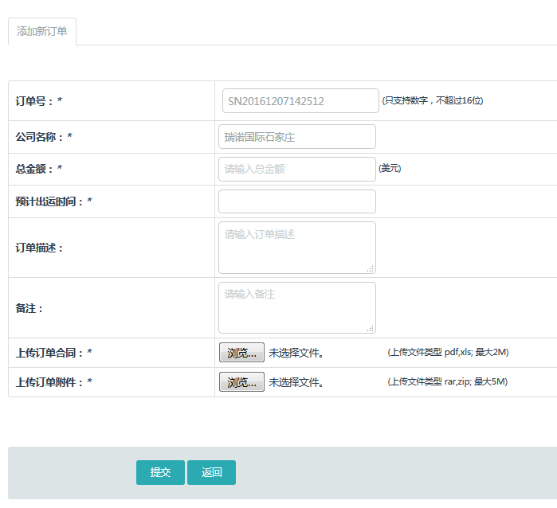

订单管理的状态包括：未完成、已申请、已完成、已取消四个状态。
客户回款之后，在订单管理中添加回款记录，如果是分期付款，则每一次到款添加一次汇款记录，每一条回款记录都需要经理确认。回款完成之后，需要在回款记录里申请回款完成，待经理“确认订单完成”之后，订单状态变为“已完成”，该客户阶段自动进入已成单阶段，客户归属跳到成交客户。




注：业务员只可以添加回款记录而不能修改，删除记录。 经理可在添加回款记录页面添加记录，确定回款记录是否真实。
只有没被确认的回款记录才可删除。确认后回款金额增加，会被记录到业务员的业绩中。
在签单收款阶段 申请下订单--进入订单列表--添加回款记录，都回完款之后，再去申请进入 已成单阶段

如果要下订单，客户阶段需要进入签单阶段，然后归属客户列表会出来下订单的按钮，可以添加订单